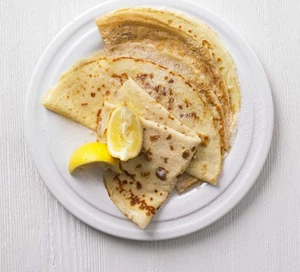

Pancakes Recipe

| kcal |
fat |
saturates |
carbs |
sugars |
fibre |
protein |
salt |
| 61 |
2g |
1g |
7g |
1g |
0g |
3g |
0.1g |
Ingredients
- 100g plain flour
- 2 large eggs
- 300ml milk
- 1 tbsp sunflower or vegetable oil, plus a little extra for frying
- lemon wedges to serve (optional)
- caster sugar to serve (optional)
Method
STEP
Put 100g plain flour, 2 large eggs, 300ml milk, 1 tbsp sunflower or vegetable oil and a pinch of salt into a bowl or large jug, then whisk to a smooth batter.STEP
Set aside for 30 mins to rest if you have time, or start cooking straight away.STEP
Set a medium frying pan or crêpe pan over a medium heat and carefully wipe it with some oiled kitchen paper.STEP
When hot, cook your pancakes for 1 min on each side until golden, keeping them warm in a low oven as you go.STEP
Serve with lemon wedges and caster sugar, or your favourite filling. Once cold, you can layer the pancakes between baking parchment, then wrap in cling film and freeze for up to 2 months.
Mikhail Shmelev © 2020